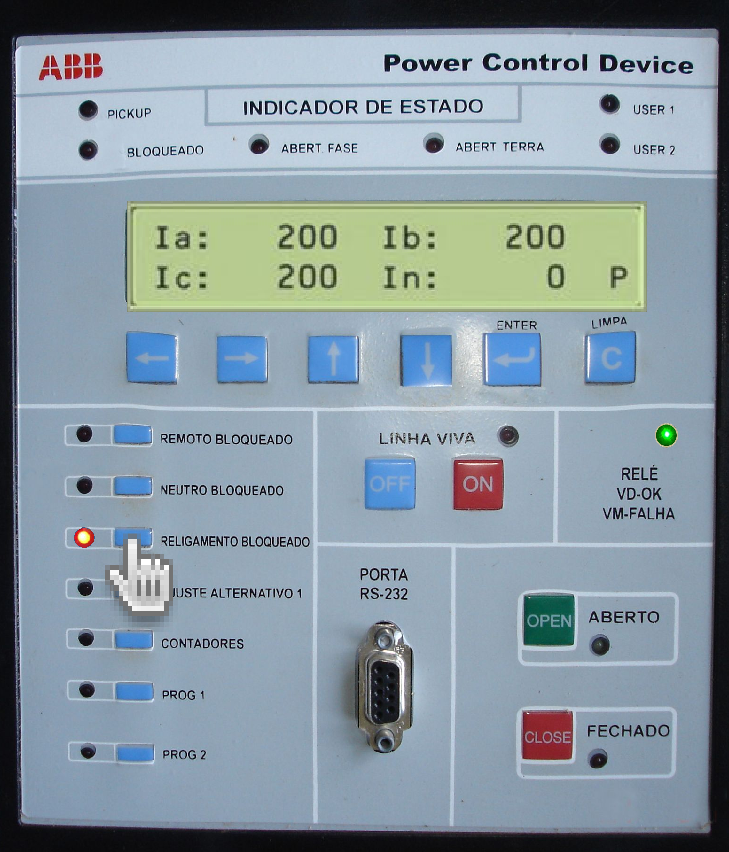
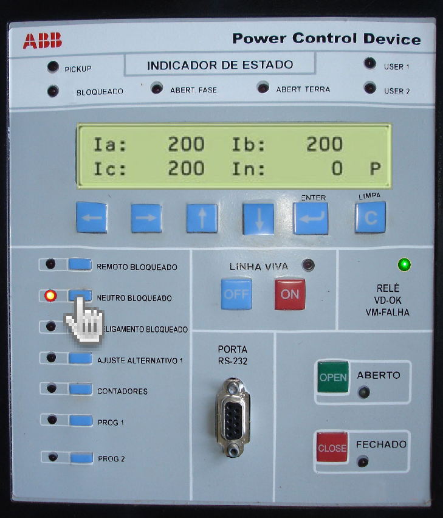
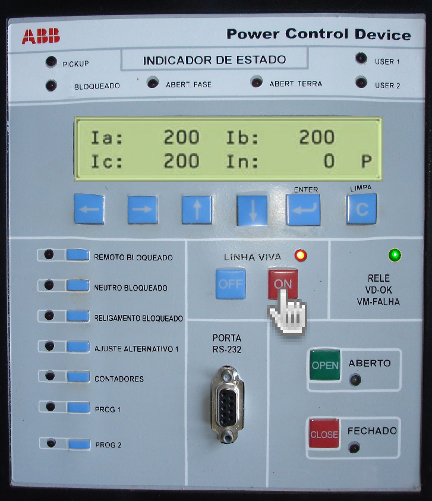
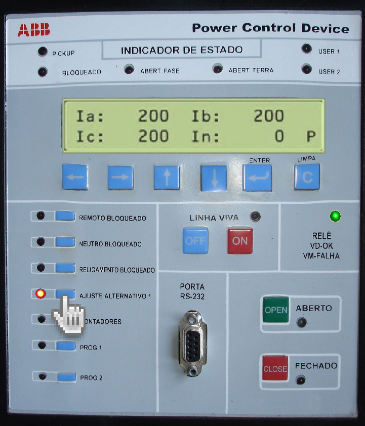
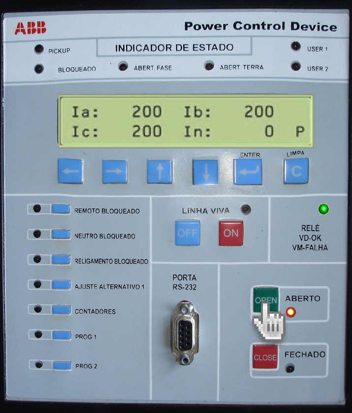
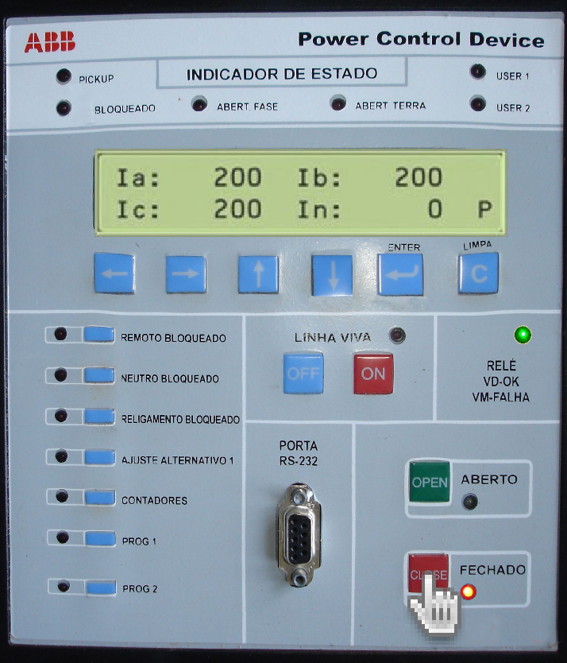

Bloqueio do "RA" Religamento Automático
Apertar a tecla Azul de "RELIGAMENTO BLOQUEADO" e confirme se o led vermelho ficou ACESO!.
Bloqueio do "ST" Proteção de Neutro
Apertar a tecla azul de NEUTRO BLOQUEADO e confirme se o led vermelho ficou ACESO!
Ligar "HLT" Proteção para Linha Viva
Apertar a tecla vermelha "ON" de LINHA VIVA e confirme se o led vermelho ficou ACESO!
Alteração para o grupo de "Ajuste Alternativo"
Apertar a tecla azul de AJUSTE ALTERNATIVO 1 e confirme se o led vermelho ficou ACESO!
Abrir Religador
Apertar a tecla verde "OPEN" (ABERTO) e confirme se o led vermelho ficou ACESO!
Fechar Religador
Apertar a tecla vermelha "CLOSE" (FECHADO) e confirme se o led vermelho ficou ACESO!
